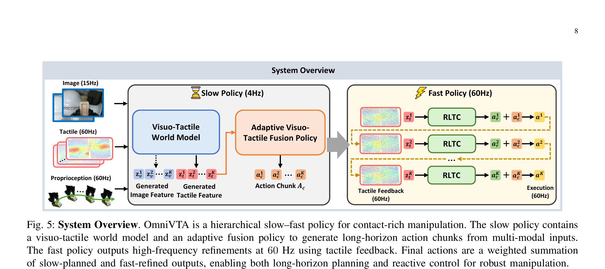

OmniVTA: Visuo-Tactile World Modeling for Contact-Rich Robotic Manipulation
Zheng 等 · 2026 技术报告 · arXiv:2603.19201 v2 · Zotero D5UD42GU
OmniVTA 把触觉从“额外输入”提升为“要预测的未来状态”：慢速双流 DiT 想象短时视觉与触觉演化并生成动作，60 Hz 快速 reflex controller 比较预测触觉和实测触觉，实时修正接触偏差。
§1 Introduction：接触丰富任务为什么需要预测“将要摸到什么”
擦拭、剥离、切割、插装等任务的成败取决于压力、摩擦和微小接触转变，这些信号常被遮挡，RGB 很难及时推断。已有触觉策略多把 tactile 当作额外当前观察，或用 action chunk 开环执行；它们能识别接触，却不显式预测接触如何发展，也难在 chunk 中途迅速纠偏。
OmniVTA 同时解决数据与方法：OmniViTac 提供同步视觉—触觉—动作数据；模型用 self-supervised tactile encoder 和双流 visuo-tactile world model 预测短期接触演化。慢速融合策略生成动作，快速 reflexive controller 比较预测触觉与实时触觉 latent，用差分反馈修正执行，形成不同频率的 slow–fast 闭环。
展开原文 · 核心主张
“predicts future contact states”
§2 Related Work：触觉观测、触觉预测与快速反射
视觉—触觉 imitation learning 通常在 encoder 或 policy 中融合当前 tactile，主要补偿遮挡和识别接触；高频低层控制则直接根据力/触觉误差反应。两类方法分别有语义规划和快速反馈，却缺少一个预测的内部接触状态把它们连接起来。
OmniVTA 让触觉不只是被动条件，而成为 world model 的预测目标；Latent Tactile Differential 描述“现实接触与预计接触差了多少”。这与视觉 WAM 预测未来图像类似，但触觉采样更高频、局部性更强，时间同步和传感器标定的重要性也远高于普通 RGB 数据。
§3 接触任务为什么不能只看 RGB
§4 Hierarchical slow–fast policy

1. 编码视觉与触觉
TactileVAE 自监督压缩高维接触图像。
输入是什么：相机图像或视频，加上任务指令和机器人当前状态。它们还是原始观测，模型尚未把它们变成可用于预测或控制的特征。
这一步究竟做什么：本步骤执行“编码视觉与触觉”。具体来说，TactileVAE 自监督压缩高维接触图像。 这里处理的只是整条链路中的一个接口：把上一步的结果整理成下一步能够正确读取和继续计算的形式。
输出到哪里：一组比原始输入更紧凑的内部特征；它不是最终动作或画面。这个结果会交给下一步“预测短时多模态未来”继续处理。
为什么不能省略：模型不能高效地直接在所有原始像素和长序列上推理；这一步把信息压成后续模块能处理、比较和复用的形式。
2. 预测短时多模态未来
视觉流看物体变化，触觉流看接触演化。
输入是什么：来自上一步“编码视觉与触觉”的产物：一组比原始输入更紧凑的内部特征；它不是最终动作或画面。本步骤还会按论文设置读取当前条件、时间步或训练信号。
这一步究竟做什么：本步骤执行“预测短时多模态未来”。具体来说，视觉流看物体变化，触觉流看接触演化。 模型从相同起点产生候选未来，后续模块再检查这些未来是否符合条件、物理规律或动作需要。
输出到哪里：一个或多个候选未来、动作或轨迹，以及必要的中间状态。这个结果会交给下一步“生成动作与触觉参考”继续处理。
为什么不能省略：它承担上下两步之间的接口；缺少它，前一步产生的信息无法以正确格式或正确含义传到下一步。
3. 生成动作与触觉参考
期望 tactile latent 成为执行期参考。
输入是什么：来自上一步“预测短时多模态未来”的产物：一个或多个候选未来、动作或轨迹，以及必要的中间状态。本步骤还会按论文设置读取当前条件、时间步或训练信号。
这一步究竟做什么：本步骤执行“生成动作与触觉参考”。具体来说，期望 tactile latent 成为执行期参考。 模型从相同起点产生候选未来，后续模块再检查这些未来是否符合条件、物理规律或动作需要。
输出到哪里：一个或多个候选未来、动作或轨迹，以及必要的中间状态。这个结果会交给下一步“60 Hz 残差纠偏”继续处理。
为什么不能省略：它承担上下两步之间的接口；缺少它，前一步产生的信息无法以正确格式或正确含义传到下一步。
4. 60 Hz 残差纠偏
预测—实测差异触发局部动作修正。
输入是什么：来自上一步“生成动作与触觉参考”的产物：一个或多个候选未来、动作或轨迹，以及必要的中间状态。本步骤还会按论文设置读取当前条件、时间步或训练信号。
这一步究竟做什么：本步骤执行“60 Hz 残差纠偏”。具体来说，预测—实测差异触发局部动作修正。 模型从相同起点产生候选未来，后续模块再检查这些未来是否符合条件、物理规律或动作需要。
输出到哪里：一个或多个候选未来、动作或轨迹，以及必要的中间状态。这是图中这条链路的最终产物，随后会进入真实执行、模型更新或指标评测。
为什么不能省略：它把前面得到的内部结果落实为可执行动作、可训练模型或可解释指标，完成从方法到结果的最后一步。
§5 双流预测与差分反馈
- $z_t^{tac}$
- 接触传感器编码的真实触觉 latent。
- $\hat z_t^{tac}$
- 世界模型基于视觉、动作和历史预测的预期触觉。
- $\Delta z_t^{tac}$
- 预测与实际接触的偏差；滑动、碰撞或抓取不稳会直接体现在这里。
- $a_t^{exec}$
- 慢速视觉动作加上触觉残差控制器的快速修正，使策略无需等待下一次完整视觉推理。
快速控制器使用的是“预测接触应该怎样”与“实际接触正在怎样”的差，而不仅是当前 tactile feature。这使触觉预测成为可执行的闭环参考。
§6 OmniViTac 数据集
§7 价值与边界
OmniVTA 说明多模态 WAM 的价值不只是“更强感知”，而是为高频控制生成可比较的未来参考。代价是专用触觉传感器、跨传感器标定与数据采集，迁移到不同 tactile hardware 并非自动成立。
§8 实验归因与复现：多模态提升不能只归功于更多传感器
最小可信复现清单
- 记录 tactile 硬件、原始频率、视觉频率、重采样和延迟校准。
- 说明 self-supervised tactile encoder 的正负样本与增强是否保留接触强度。
- 给出双流预测 horizon、融合位置和 slow/fast 两个控制频率。
- 比较 current tactile、predicted tactile、oracle future tactile 与打乱 tactile。
- 在新工具、新几何、摩擦变化和外部扰动下分解成功率。
OmniVTA 的增量不是“RGB 再拼触觉”，而是预测接触未来，并把预测—观测差转成高频闭环修正。